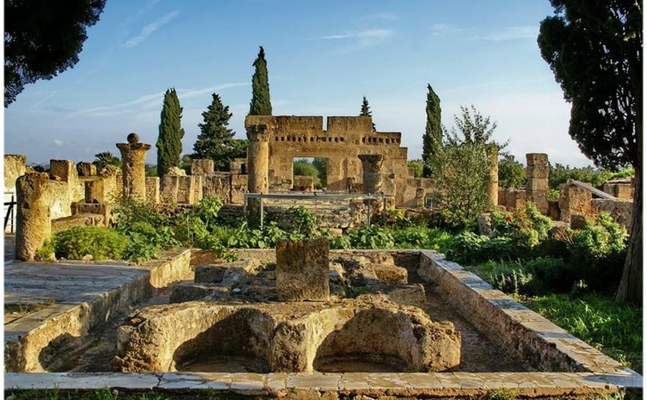

On dit d’Utique que c’est l’un des tout premiers comptoirs phéniciens implantés en terre africaine, probablement vers 1100 avant J.C. (Pline précise même : 1101 !).
Aînée de Carthage, Utique joua longtemps le rôle de capitale avant d’être éclipsée par sa voisine fondée à la fin du IXe siècle avant J.C. mais rapidement montée en puissance. Associée, parfois malgré elle, au destin de sa voisine, la ville connut des périodes fastes et des heures sombres. Mais, au tournant décisif de la confrontation entre Carthage et Rome, elle sut se ranger du bon côté, ce qui, en 146 av. J-C., lui a valu le privilège de redevenir, pour 130 ans, la capitale de l’Afrique. Ensuite, il advint d’elle ce qui advint de la plupart des cités antiques de Tunisie : une fortune diverse scellée au VIIe siècle par un déclin irrémédiable.
Le site archéologique d’Utique, qui couvre une superficie des plus modestes, est aujourd’hui situé à 12 km de la mer par suite du rembloiement deltaïque de l’embouchure du fleuve Medjerda. Il comporte quelques édifices en surface, en particulier cette superbe « maison de la cascade », mais aussi d’autres maisons, des temples, un forum, des thermes, les traces de théâtres, cirques, amphithéâtres, etc.
Moins spectaculaire mais plus important, peut-être, le niveau souterrain qui a été dégagé et qui a mis au jour une nécropole punique. Des sépultures remontant jusqu’au VIIe siècle av. J-C. ont livré un précieux mobilier funéraire qui nous renseigne sur les croyances qui prévalaient à cette époque ainsi que sur le genre de vie de la population et de ses activités etc.